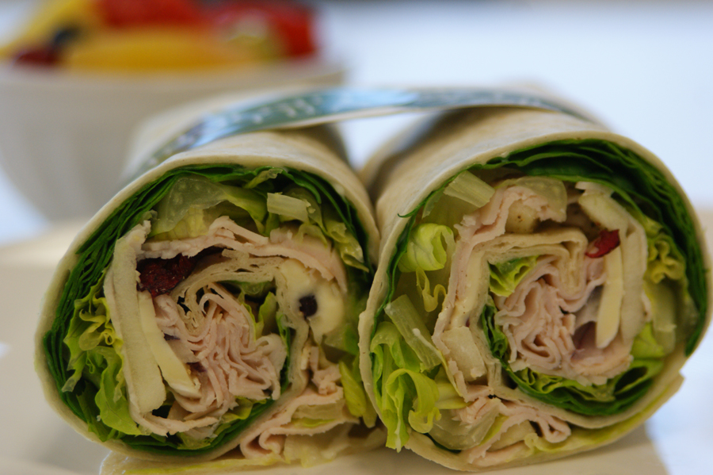
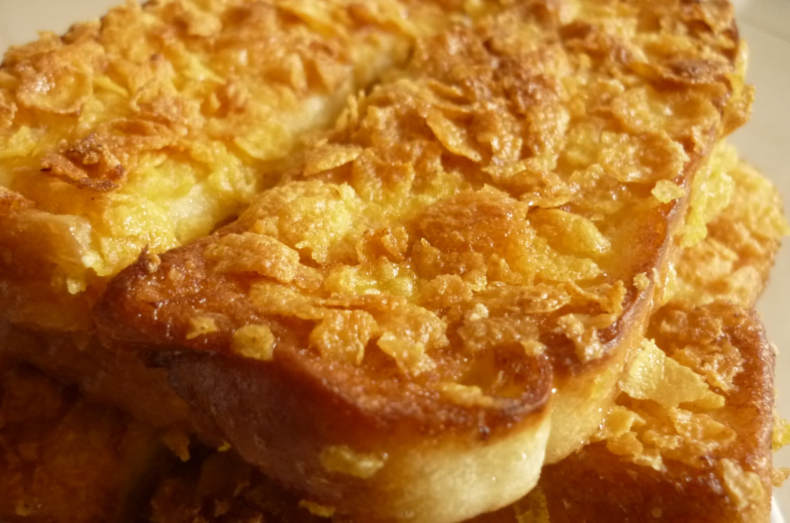
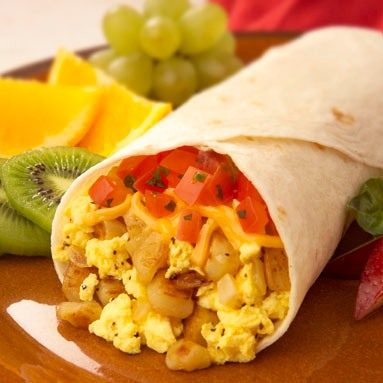
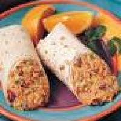
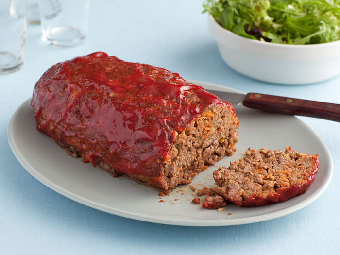
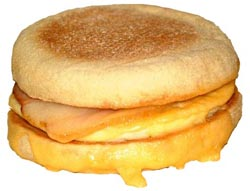

Least Favorite Foods
Here are some of the not so good or bad foods at Echo Lake. Some of these foods I probaly don't like as well.
- cran-apple turkey wraps "What makes them so bad, is that they combine cranberries and apples with turkey into a wrap."
- french toast "I like french toast out of camp, but the camp's french toast is so bland!"
- breakfast burrito "Mexican food is good, but for breakfast?"
- chicken and Mexican rice wraps "I heard people say now there good, but I still hate them!"
- meatloaf "Meatloaf is disgusting, but this meatloaf is 1,000 times as disgusting!"
- egg-mc muffins "There alright, not great."





